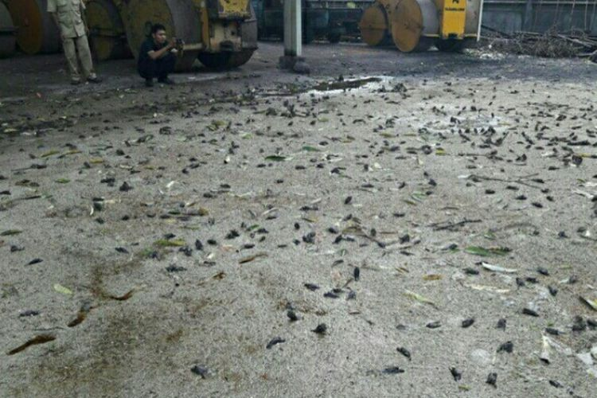

Ribuan Burung Pipit Mati Misterius di Karangasem, Apa Penyebabnya?
LUTFY MAIRIZAL PUTRA
KabarKabur.com -26/09/2017, 21:41 WIB

Ribuan burung pipit di Kota Amlapura, Karangasem, mati di halaman kantor pekerjaan Umum dan Penataan Ruang (PUPR) setempat, Senin (25/9/2017). (handout/Wayan Supandi)
KabarKabur.com - Kemarin, Senin (25/9/2017), ribuan burung pipit mati di sekitar kantor Dinas Pekerjaan Umum dan Penataan Ruang (PUPR) Karangasem, Bali. Bangkai burung berserakan di bawah pohon. Peristiwa itu kali pertama diketahui oleh tukang kebun Dinas PUPR Karangasem, Amin Basri (54), pada pukul 05.00 WITA.
Peneliti ekologi dan sistematika burung Lembaga Ilmu Pengetahuan Indoneia ( LIPI) Mohammad Irham mengatakan, kematian masal burung liar merupakan peristiwa yang jarang terjadi. Dalam 10 tahun terakhir, fenomena itu terjadi pada burung air di China yang diakibatkan oleh flu burung.
Lalu, pada kasus peningkatan aktivitas gunung berapi, penyebab kematian bisa terjadi karena peningkatan suhu. Burung akan mati karena meminum air panas.
Akan tetapi, untuk kasus kematian burung pipit di Karangasem, Irham menduga bahwa penyebab kematian adalah gas beracun yang dikeluarkan Gunung Agung dengan status “awas”.
“Seperti sulfur dan metana. Bisa juga gas lain. Pada saat gunung mau meletus gas beracun meningkat. Penyebarannya lebih luas dari biasanya sehingga berefek pada burung di situ,” kata Irham saat dihubungi Kompas.com, Selasa (26/9/2017).
Irham menjelaskan, pada dasarnya burung lebih cepat berpindah dibandingkan mamalia seperti rusa. Meski mampu berlari cepat, hamparan gas beracun bisa tetap terhirup. Jika terjadi peningkatan aktivias gunung berapi, burung yang hidup di kanopi hutan pada ketinggian 2.000-2.500 meter akan terbang rendah mendekati permukaan.
Peristiwa itu dialami langsung saat Irham melakukan survei di Gunung Slamet. Pada 2009, terjadi peningkatan aktivitas Gunung Slamet yang membuat burung di kanopi atas bermigrasi dalam jumlah besar. Bau belerang turun hingga ketinggian 2.000 meter.
“Zaman dulu, di luar negeri, pekerja tambang pakai burung untuk mendeteksi apakah lorong tambang ada gas beracun atau tidak. Kalau ada, burungnya langsung mati. Jadi mereka bisa keluar sebelum kena gas beracun,” kata Irham.
Namun, Irham belum dapat memastikan bila gas beracun memang menjadi penyebab kematian ribuan burung pipit di Karangasem. Untuk itu, diperlukan analisis oleh ahli vulkanologi. Jika bukan gas, menurut dia, kematian burung tak disebabkan oleh peningkatan aktivitas Gunung Agung.
Sebelum hasil analisis keluar, ada baiknya masyarakat dipindahkan dari kawasan tersebut. Sebab, anak-anak paling rentan terkena dampaknya.
“Kalau sudah ada konfirmasi kandungan gasnya lebih tinggi dari biasanya, sebaiknya penduduk itu dipindahkan. Mungkin bagi orang dewasa tidak terlalu berpengaruh, tapi bagi anak-anak, pengaruhnya bisa jauh lebih buruk. Masih rentan ketahanan tubuhnya,” kata Irham.
penulis :Lutfy Mairizal Putra
Editor :Shierine Wangsa Wibawa
sumber :newsweek